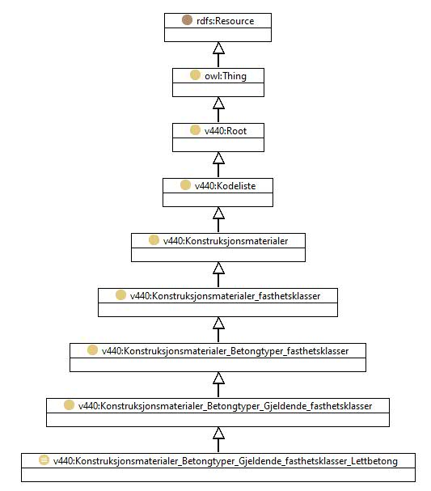

https://ontologi.atlas.vegvesen.no/v440/core/v440-owl#Konstruksjonsmaterialer_Betongtyper_Gjeldende_fasthetsklasser_Lettbetong
Class v440:Konstruksjonsmaterialer_Betongtyper_Gjeldende_fasthetsklasser_Lettbetong

rdf:type
owl:Class
rdfs:label
Lightweight concrete, cylinder strength / NS 3473, 6th Edition
Lettbetong, Sylinderfasthet / NS 3473, 6. utgave
rdfs:subClassOf
v440:Konstruksjonsmaterialer_Betongtyper_Gjeldende_fasthetsklasser
owl:oneOf
[
v440:Konstruksjonsmaterialer_Betongtyper_Gjeldende_fasthetsklasser_Lettbetong_LB55_fcn-398
,
v440:Konstruksjonsmaterialer_Betongtyper_Gjeldende_fasthetsklasser_Lettbetong_LB30_fcn-238
,
v440:Konstruksjonsmaterialer_Betongtyper_Gjeldende_fasthetsklasser_Lettbetong_LB20_fcn-168
,
v440:Konstruksjonsmaterialer_Betongtyper_Gjeldende_fasthetsklasser_Lettbetong_LB65_fcn-454
,
v440:Konstruksjonsmaterialer_Betongtyper_Gjeldende_fasthetsklasser_Lettbetong_LB35_fcn-273
,
v440:Konstruksjonsmaterialer_Betongtyper_Gjeldende_fasthetsklasser_Annen_betongtype_Annen_lettbetong
,
v440:Konstruksjonsmaterialer_Betongtyper_Gjeldende_fasthetsklasser_Lettbetong_LB75_fcn-510
,
v440:Konstruksjonsmaterialer_Betongtyper_Gjeldende_fasthetsklasser_Lettbetong_LB45_fcn-343
,
v440:Konstruksjonsmaterialer_Betongtyper_Gjeldende_fasthetsklasser_Lettbetong_LB25_fcn-203
]
v440:avsnitt
V-8.6
v440:kapittel
V-8
v440:kode
30
Instances
v440:Konstruksjonsmaterialer_Betongtyper_Gjeldende_fasthetsklasser_Annen_betongtype_Annen_lettbetong
,
v440:Konstruksjonsmaterialer_Betongtyper_Gjeldende_fasthetsklasser_Lettbetong_LB20_fcn-168
,
v440:Konstruksjonsmaterialer_Betongtyper_Gjeldende_fasthetsklasser_Lettbetong_LB25_fcn-203
,
v440:Konstruksjonsmaterialer_Betongtyper_Gjeldende_fasthetsklasser_Lettbetong_LB30_fcn-238
,
v440:Konstruksjonsmaterialer_Betongtyper_Gjeldende_fasthetsklasser_Lettbetong_LB35_fcn-273
,
v440:Konstruksjonsmaterialer_Betongtyper_Gjeldende_fasthetsklasser_Lettbetong_LB45_fcn-343
,
v440:Konstruksjonsmaterialer_Betongtyper_Gjeldende_fasthetsklasser_Lettbetong_LB55_fcn-398
,
v440:Konstruksjonsmaterialer_Betongtyper_Gjeldende_fasthetsklasser_Lettbetong_LB65_fcn-454
,
v440:Konstruksjonsmaterialer_Betongtyper_Gjeldende_fasthetsklasser_Lettbetong_LB75_fcn-510
References
as owl:disjointUnionOf (
v440:Konstruksjonsmaterialer_Betongtyper_Gjeldende_fasthetsklasser
)
Generated with
TopBraid Composer
by
TopQuadrant, Inc.